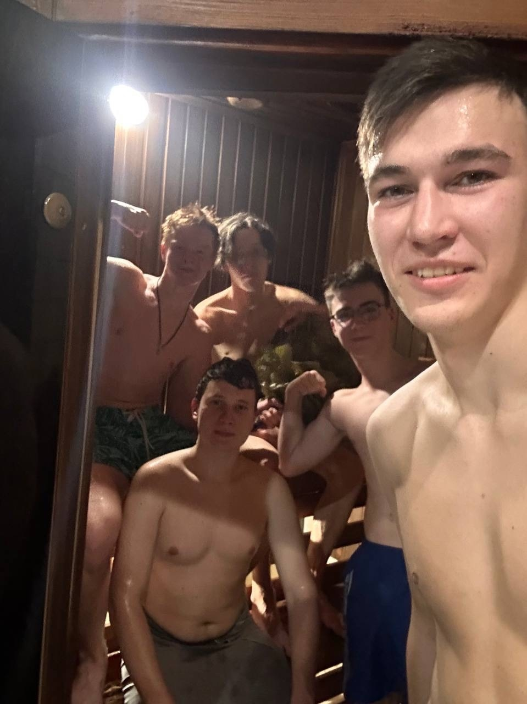
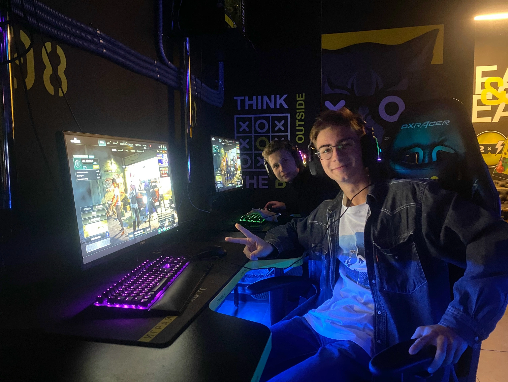
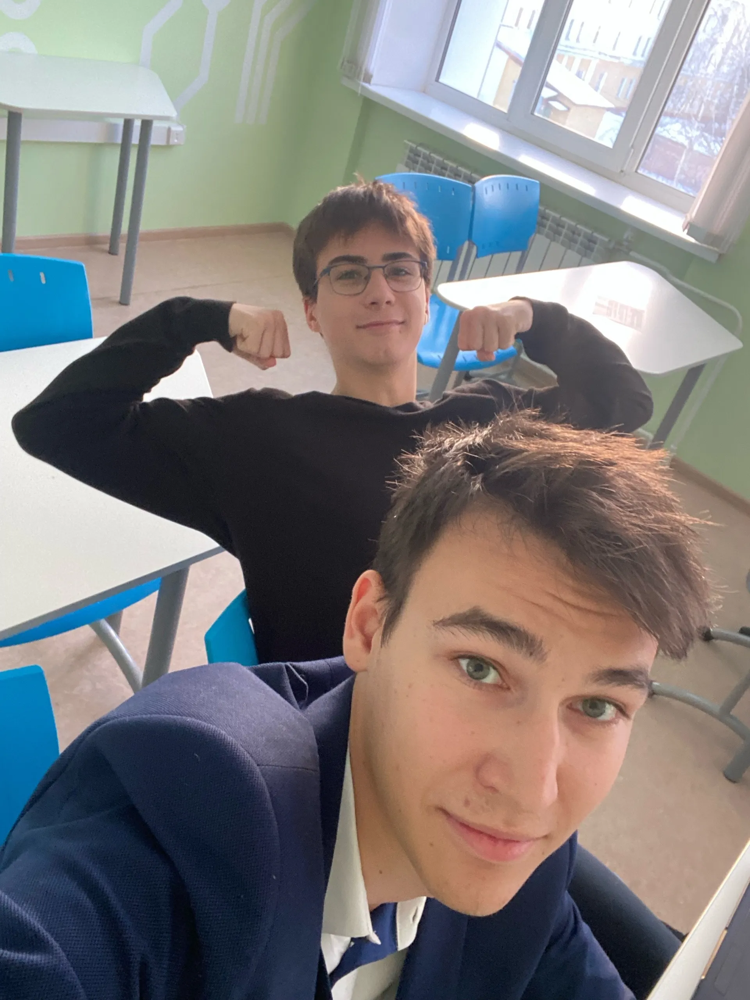
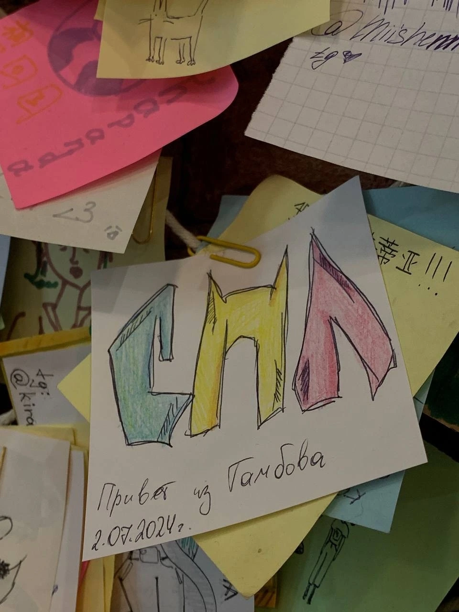
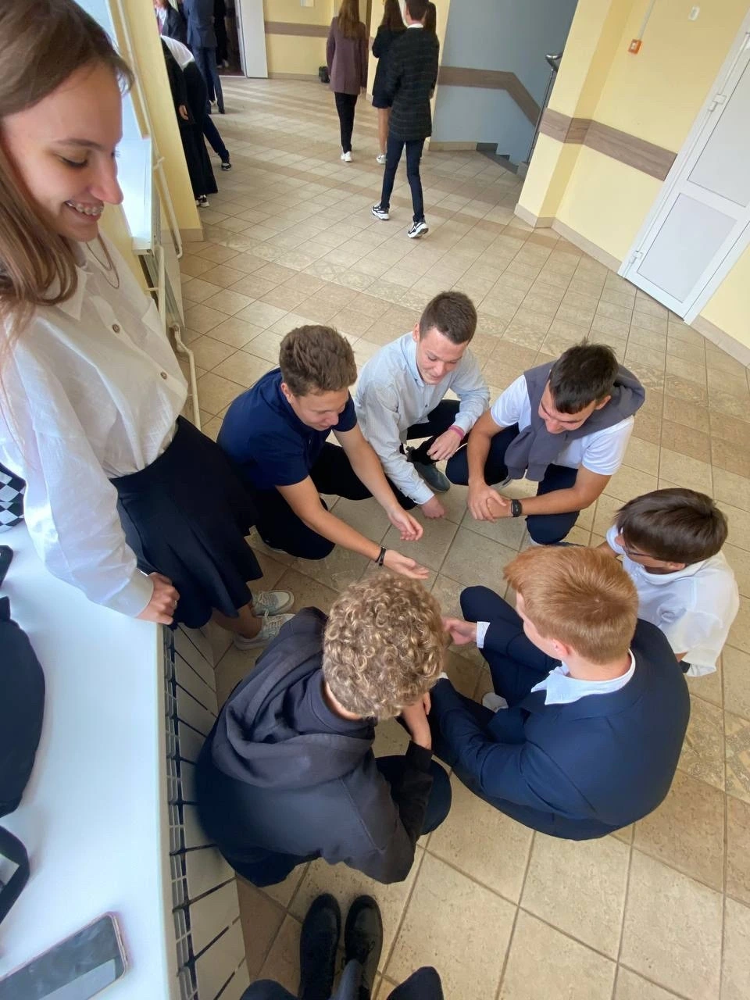
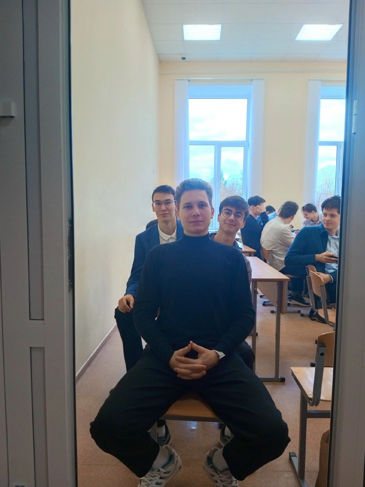
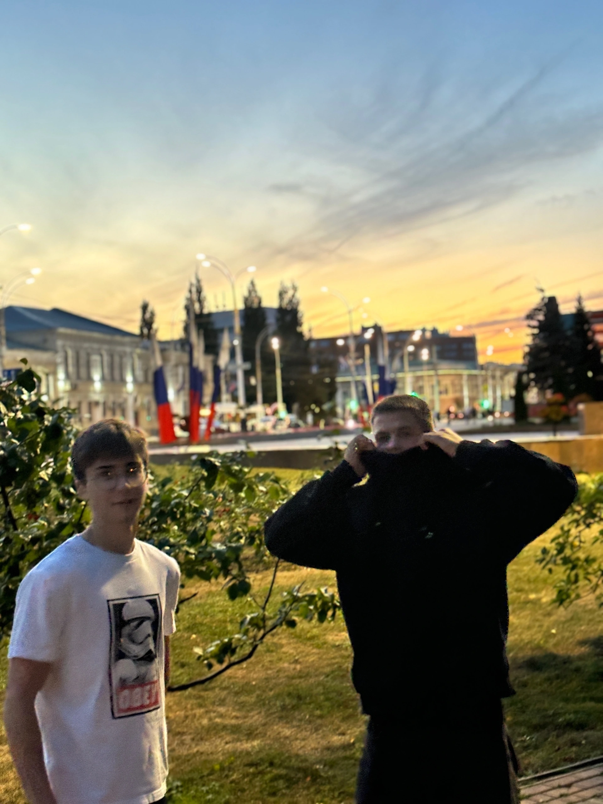
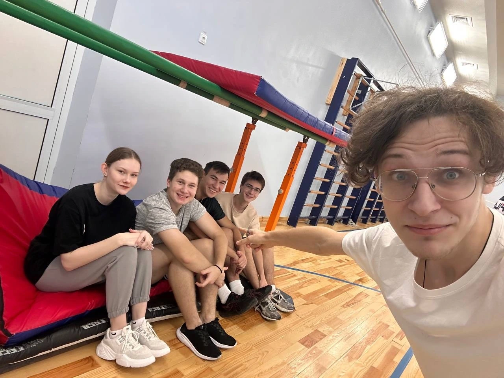
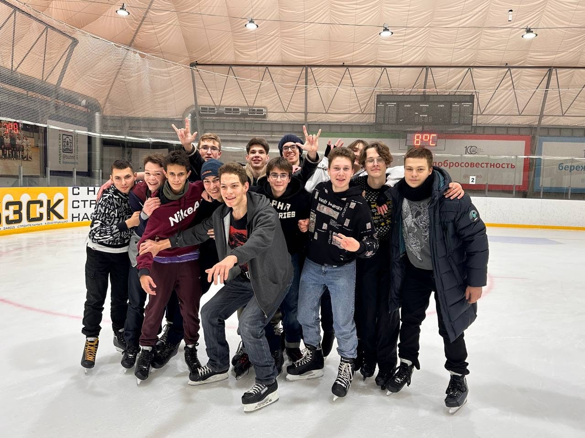
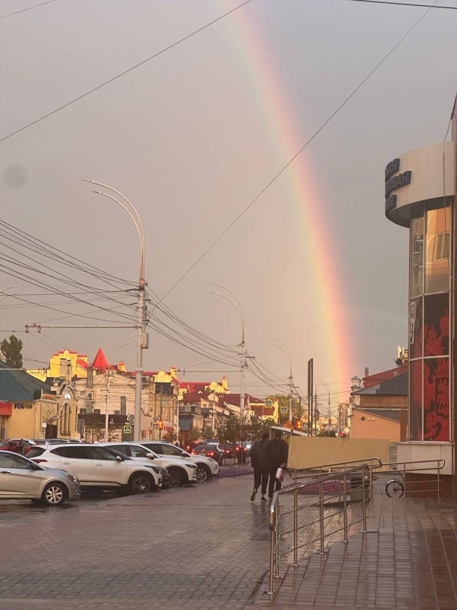
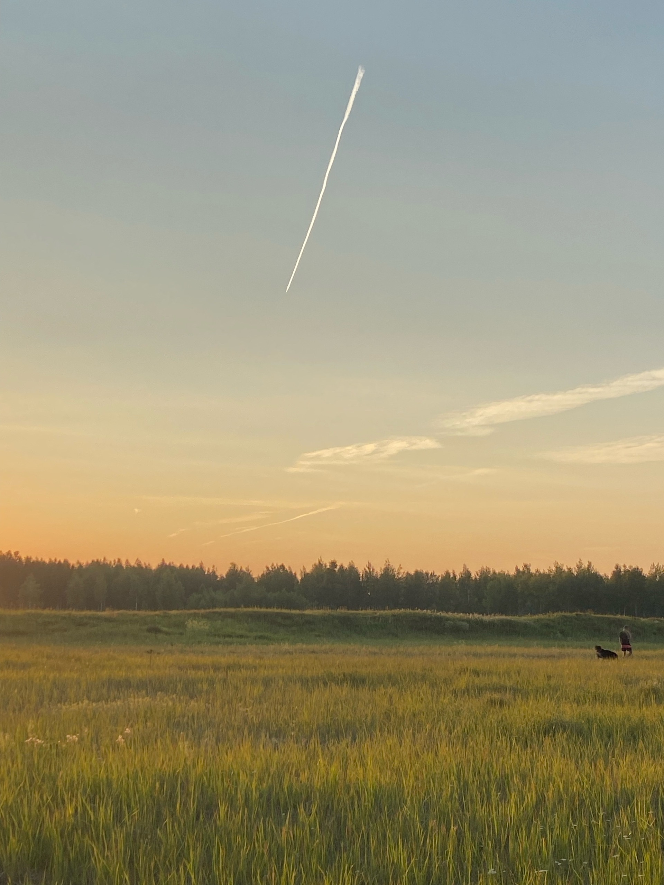
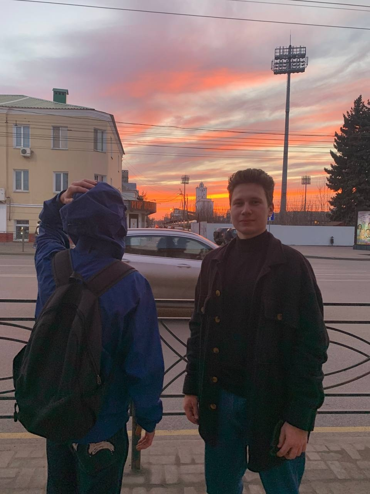
Сообщество нормальных людей. Одно из самых первых сообществ в Тамбове с идеей вести блог о нескольких людях сразу.
Мы — одно из самых первых сообществ в городе Тамбове с идеей вести блог о нескольких людях сразу.
За время своего существования СНЛ постоянно расширялся, потом распадался, а затем снова расширялся. Амбассадоры освещали собственную жизнь, крупные политические события — как в их маленьком городе, так и в мире в целом, показывали свои путешествия и приключения. Благодаря одному из постов даже был построен мост для жителей маленького СНТ.
В конечном итоге костяк людей, которые были в начале, остался и продолжает общаться друг с другом. СНЛ стал точкой объединения людей. Здесь многие нашли своих друзей и просто хороших знакомых.
Причиной прекращения активной деятельности стала деградация платформы ВКонтакте — молодому поколению просто стало неинтересно сидеть в этой социальной сети.